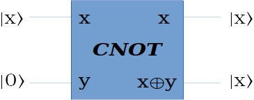

量子信息的不可克隆性 (1)
Ping Zhou, 2022-01-03
如果你关注过量子通信或量子信息的动态，应该会经常听到量子信息的“不可克隆性”这个概念。那么这个概念是怎么来的？今天就来聊一聊。
先从一个简单的例子出发。从以前对CNOT门的讨论，它似乎可以用来“复制”信息：

看起来当辅助量子位是 \(|0\rangle\) 的时候，输出就得到了两个 \(|x\rangle\) ，真的是这样吗？
实际上，CNOT门只能复制经典信息（也就是输入为 \(|0\rangle\) 或 \(|1\rangle\) 的情况）。如果输入是一般状态 \(|\psi\rangle=a|0\rangle+b|1\rangle\) ，CNOT并不能复制它！
咱们来具体推导一下。首先在输入端，要复制的量子位是 \(a|0\rangle+b|1\rangle\) ，辅助量子位 \(|0\rangle\) ，合起来输入端状态就是
\begin{matrix} (a|0\rangle + b|1\rangle)|0\rangle = a|00\rangle + b|10\rangle \end{matrix}CNOT的作用是当第一个量子位为1的时候翻转第二个量子位，所以我们在输出端得到的状态是
\begin{matrix} a|00\rangle + b|11\rangle & (1) \\ \end{matrix}但是，我们要的是在输出端复制 \(|\psi\rangle\) ，也就是在输出端得到 \(|\psi\rangle|\psi\rangle\) ，这个状态展开写就是这样：
\begin{matrix} |\psi\rangle|\psi\rangle = (a|0\rangle+b|1\rangle)(a|0\rangle+b|1\rangle) & \\ = a^2|00\rangle + ab|01\rangle + ab|10\rangle + b^2|11\rangle & (2) \\ \end{matrix}比较一下(1)和(2)，只有当 \(ab=0\) ，也就是要复制的量子位为 \(|0\rangle\) 或 \(|1\rangle\) 时，这两个式子才有可能相等，而在一般情况下，(1)和(2)不可能相等。
这个推导告诉我们，CNOT组成的“复制”电路，只能复制经典比特，不能复制处于一般态的量子位。
从这个简单的例子开头，下一步我们可以讨论更一般的情况，证明复制量子态的机器不可能存在。
(未完待续）